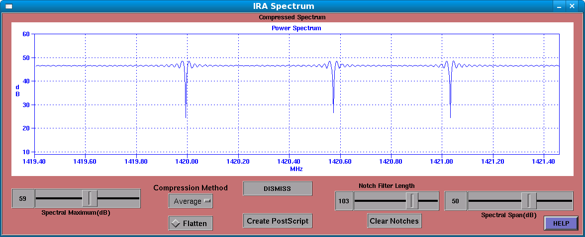

The IRA Spectrum Window
This window shows a conventional spectral display, such as one might expect to see on a laboratory RF spectrum analyzer.

The Spectral Maximum Control
This control determines the maximum value to be shown in the display, it is a slider control, which ranges from -10 to 120, and is calibrated in dB.
The Compression Method Control
This selects the method used to compress the SETI spectrum (usually several million bins) into the smaller conventional spectral display. The usual method is Average, but both Max and Median are also available.
The Flatten Control
This control allows you to “flatten” the spectrum, using a function that inverts the roll-off effects of the CIC filtering in the USRP FPGA.
The Create Postscript Control
This control allows you to create a postscript file of the spectral plot. It will pop-up a file browser to allow you to choose a directory and filename for the resulting PostScript file.
The Spectral Span Control
This slider control controls the total span of the spectral display, in dB. Smaller values give higher resolution in the Y axis, while larger values reduce the resolution in the Y axis.
The Notch Filter Length Control
This control determines the length of the notch filter. Individual notches can be set using the RIGHT mouse button at a point on the spectral display.
The Clear Notches Control
This control clears any notch filter points that have been set.
DISMISS
This control causes the IRA Spectral Window to close, but spectral data are still updated while the window is closed.
Using the LEFT mouse button causes a small display to pop up with the corresponding frequency, relative power (dB), and the Doppler velocity (km/s).